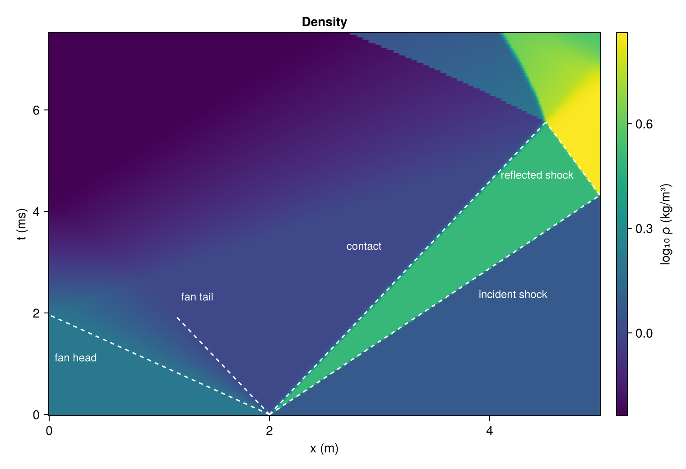
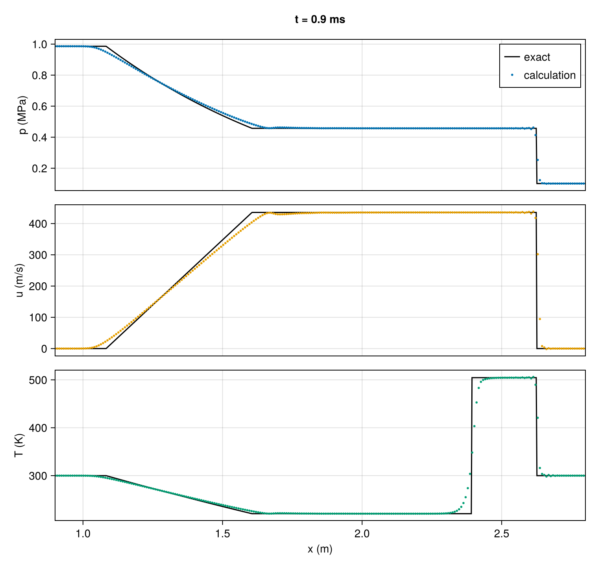
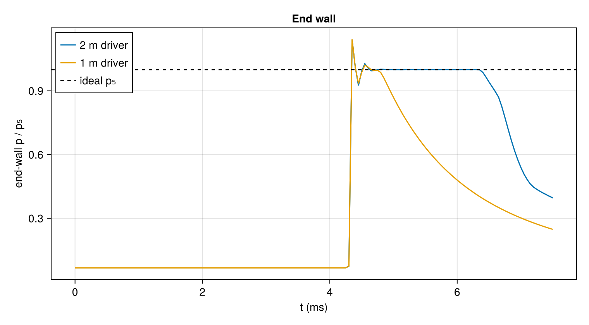
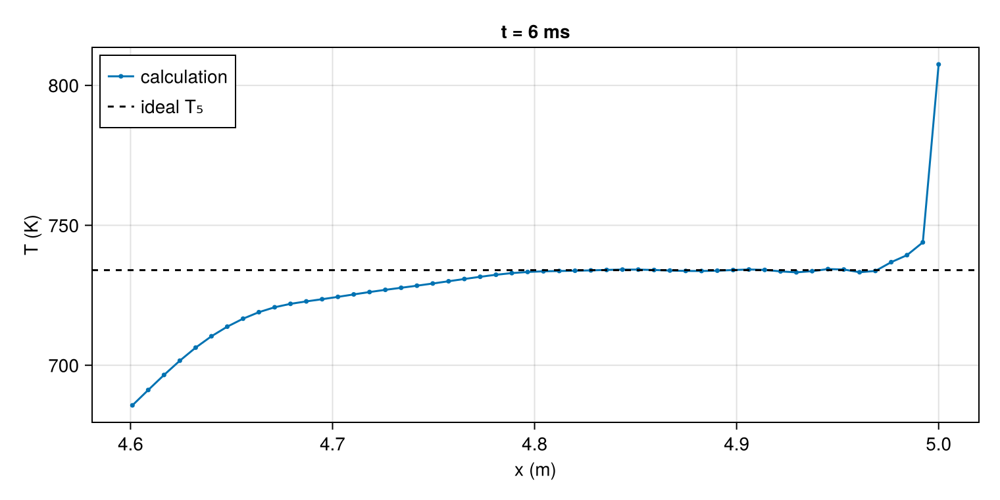

Shock tube
A shock tube is a closed pipe divided by a diaphragm into a driver section at high pressure and a driven section holding the test gas. When the diaphragm bursts, a shock runs into the test gas and an expansion runs back into the driver. The shock reflects from the closed end of the driven section and leaves the gas behind it at rest, compressed and heated to a state set by the shock Mach number, until the next wave arrives. Chemical kinetics measurements, shock-tunnel reservoirs and interface-instability experiments all use that interval.
This tutorial designs a shock tube that sends a Mach 2 shock into air at room conditions, simulates it, and compares the simulation with the ideal shock-tube relations. It introduces multicomponent gas states, initial conditions built from regions, and the shock regularization that the Coalescing shock tutorial ended with.
using CompactLES # re-exports MPI
using CompactLES.Regions
MPI.Initialized() || MPI.Init(threadlevel=:funneled)
using CairoMakie
using Printf
CairoMakie.activate!(type = "png")Gases
The driver holds helium and the driven section air. Nasa9Mixture builds a mixture from the NASA-9 thermodynamic fits bundled with CompactLES: each species is a thermally perfect gas, $p = \rho R T$, whose heat capacities vary with temperature. "Air" is the NASA entry for dry air, treated as one species. The order of the names fixes the order of every mass-fraction tuple.
eos = Nasa9Mixture(["He", "Air"])Nasa9Mixture{Float64} with 2 species (T_guess = 300.0)
He R = 2077.264 300.0–20000.0 K (3 intervals)
Air R = 287.0509 300.0–6000.0 K (2 intervals)A Prim takes the mass fractions and exactly two of pressure, density and temperature. mass_fractions orders a composition given by species name, by mole or by mass according to basis, and thermodynamic_state completes a state through the equation of state. Both fits begin at 300 K, the initial temperature of both gases. The helium cools below that as it expands; below the fitted range the heat capacity is held at its end-point value, the default extrapolate setting of Nasa9Mixture, and for helium, whose heat capacity is constant, this is exact.
air = Prim(Y = mass_fractions(eos, "Air" => 1.0; basis = :mole),
p = 101_325.0, T_ion = 300.0)
helium = Prim(Y = mass_fractions(eos, "He" => 1.0; basis = :mole),
p = 1e6, T_ion = 300.0)
thermodynamic_state(eos, air)(rho = 1.1766205880660914, p = 101325.0, T_ion = 300.0, e = -84256.45371476759, h = 1858.816600652499, cp = 1004.8107929332438, gamma = 1.3999260815462982, c = 347.2103295323546, u = (0.0, 0.0, 0.0), Y = (0.0, 1.0), X = (0.0, 1.0))Design
shock_tube solves the ideal shock-tube problem: the driver pressure that produces a given shock Mach number, the state behind the incident shock, and the state behind its reflection from the end wall. The driver pressure given with helium is only a starting value; its temperature and composition are kept.
Mach = 2.0
design = shock_tube(eos, helium, air, Mach)
@printf("driver pressure %.3g Pa, %.2f times the driven pressure\n",
design.driver.p, design.driver.p / air.p)driver pressure 9.86e+05 Pa, 9.73 times the driven pressureThe expanding driver gas acts as a piston on the shocked air, and an ideal gas expanding from rest cannot move faster than $2c_4/(\gamma_4 - 1)$, where $c_4$ is its initial sound speed. The shock Mach number a given pressure ratio produces therefore rises with the driver's sound speed, and helium's is nearly three times that of air:
air_driver = Prim(Y = air.Y, p = 1e6, T_ion = 300.0)
for M in (1.5, 2.0, 3.0)
ratio(driver) = driver_pressure(eos, driver, air, M).p / air.p
@printf("Mach %.1f: driver pressure ratio %6.1f with helium, %6.1f with air\n",
M, ratio(helium), ratio(air_driver))
endMach 1.5: driver pressure ratio 3.7 with helium, 7.0 with air
Mach 2.0: driver pressure ratio 9.7 with helium, 34.1 with air
Mach 3.0: driver pressure ratio 45.4 with helium, 675.8 with airTube
Layers builds an initial condition from regions: the first argument fills the domain, and each shape => state pair overlays its region. Slab(d; lo, hi) is the part of the domain between two bounds along spatial dimension d, so Slab(1, hi = L_driver) is the part with $x < L_{\text{driver}}$, $x$ being the first dimension. Each region boundary is a tanh transition three cells wide, so the diaphragm opens over a few cells rather than as a jump at one grid point. An initial condition written as a function, (x, y, z, h) -> Prim(...), receives the local grid spacing h as its fourth argument for the same purpose. Slip walls close both ends of the tube. The page compares two driver lengths, so the problem and the numerics below are functions of the driver length.
L_driver, L_driven = 2.0, 3.0
problem(L_driver) = Problem(
name = "helium-driven shock tube",
eos = eos,
domain = ((0.0, L_driver + L_driven), (0.0, 1.0), (0.0, 1.0)),
bcs = (SlipWallBC(), PeriodicBC(), PeriodicBC()),
ic = Layers(air, Slab(1, hi = L_driver) => design.driver),
)Regularization
A central scheme represents a shock as grid-scale oscillations unless something removes them, as the last figure of Coalescing shock showed. CompactLES does this in two ways, both on by default. The artificial properties add bulk and shear viscosity, thermal conductivity and species diffusivity where a sensor built from high derivatives of the solution marks a feature as unresolved; they spread a shock over a few cells and leave resolved, smooth regions nearly unchanged. A compact filter removes the shortest resolved waves from the conserved state after every step. ArtificialProperties and StateFilter hold their coefficients; the defaults are calibrated and seldom changed.
The startup, when the diaphragm opens over three cells, is the most violent part of the run. It runs at a CFL number of 0.3, and a StepControl allows a failed step to be retried at a smaller one. The grid has 128 points per meter.
numerics(L_driver) = Numerics(
n_global = (round(Int, 128 * (L_driver + L_driven)), 1, 1),
cfl = 0.3,
control = StepControl(retries = 2),
)Run
field_snapshot gathers named fields over the whole grid, with the node coordinates and the time at which it was taken. The run takes one of pressure, temperature and density every 0.05 ms, for a wave diagram and for the end-wall history, and one of pressure, velocity and temperature at 0.9 ms, before any wave has reflected. An EveryTime trigger fires at the start and then at a fixed interval of simulated time.
function simulate(L_driver; tfinal = 7.5e-3)
solver, Q = setup(problem(L_driver), numerics(L_driver))
frames, early = [], Ref{Any}()
every = Callback(EveryTime(0.05e-3), function (solver, Q)
push!(frames, field_snapshot(solver, Q; fields = (:p, :T_ion, :rho)))
nothing
end)
once = Callback(AtTime(0.9e-3), function (solver, Q)
early[] = field_snapshot(solver, Q; fields = (:p, :u, :T_ion))
nothing
end)
run!(solver, Q; tfinal, nmax = 100_000, callback = (every, once))
return (; frames, early = early[])
end
tube = simulate(L_driver)
x = tube.frames[1].coords[1]
times(r) = [frame.t for frame in r.frames]
history(r, name) = reduce(hcat, [vec(frame[name]) for frame in r.frames])Wave diagram
The ideal shock-tube relations give straight paths in the $x$–$t$ plane for the incident shock, the contact surface between helium and air, the head and tail of the expansion fan, and the reflected shock. The fan's head travels into the driver at its sound speed and its tail at $u_3 - c_3$, where $u_3$ and $c_3$ are the velocity and sound speed of the expanded helium. riemann_interface solves the initial diaphragm problem exactly and supplies the states on both sides of the contact.
riemann = riemann_interface(eos, design.driver, air)
c4 = thermodynamic_state(eos, design.driver).c
c3 = thermodynamic_state(eos, riemann.left).c
u2 = riemann.u_star
W_r = abs(design.reflected_speed)
t_wall = L_driven / design.shock_speed # the incident shock reaches the end wall
t_meet = (L_driven + W_r * t_wall) / (u2 + W_r) # the reflected shock meets the contact
t_head = L_driver / c4 # the fan head reaches the driver end
fig = Figure(size = (760, 520))
ax = Axis(fig[1, 1], xlabel = "x (m)", ylabel = "t (ms)", title = "Density")
hm = heatmap!(ax, x, 1e3 .* times(tube), log10.(history(tube, :rho)),
colormap = :viridis)
Colorbar(fig[1, 2], hm, label = "log₁₀ ρ (kg/m³)")
theory = (color = :white, linestyle = :dash, linewidth = 1.5)
lines!(ax, [L_driver, L_driver + L_driven], [0, 1e3t_wall]; theory...)
lines!(ax, [L_driver, L_driver + u2 * t_meet], [0, 1e3t_meet]; theory...)
lines!(ax, [L_driver, 0], [0, 1e3t_head]; theory...)
lines!(ax, [L_driver, L_driver + (u2 - c3) * t_head], [0, 1e3t_head]; theory...)
lines!(ax, [L_driver + L_driven, L_driver + u2 * t_meet], [1e3t_wall, 1e3t_meet]; theory...)
text!(ax, [3.9, 2.7, 0.05, 1.2, 4.1], [2.25, 3.2, 1.0, 2.2, 4.6],
text = ["incident shock", "contact", "fan head", "fan tail", "reflected shock"],
color = :white, fontsize = 12)
fig
The dashed lines are the ideal predictions; each stops where the wave meets another, beyond which the simple theory no longer applies. The fan head reflects from the closed driver end at about 2 ms and travels back downstream as a second expansion, visible as the density falling across the helium.
Before the reflection
At 0.9 ms no wave has reached either end wall, and the solution is that of the diaphragm problem alone. Helium has constant heat capacities, so the expansion fan has the closed form
\[u = \frac{2}{\gamma + 1}\left(c_4 + \frac{x - x_0}{t}\right), \qquad \frac{T}{T_4} = \left(\frac{c}{c_4}\right)^2, \qquad \frac{p}{p_4} = \left(\frac{c}{c_4}\right)^{2\gamma/(\gamma-1)},\]
with $c = c_4 - (\gamma - 1)u/2$, $\gamma = 5/3$ and $x_0$ the diaphragm position. Uniform states fill the rest of the tube.
function exact(x, t)
ξ = (x - L_driver) / t
s4 = design.driver
if ξ < -c4
return (p = s4.p, u = 0.0, T = s4.T_ion)
elseif ξ < u2 - c3
g = 5 / 3
u = 2 / (g + 1) * (c4 + ξ)
r = (c4 - (g - 1) / 2 * u) / c4
return (p = s4.p * r^(2g / (g - 1)), u = u, T = s4.T_ion * r^2)
elseif ξ < u2
return (p = riemann.p_star, u = u2, T = riemann.left.T_ion)
elseif ξ < design.shock_speed
return (p = riemann.p_star, u = u2, T = riemann.right.T_ion)
else
return (p = air.p, u = 0.0, T = air.T_ion)
end
end
fig = Figure(size = (760, 720))
xs = range(0, L_driver + L_driven; length = 2000)
panels = (:p => ("p (MPa)", 1e-6), :u => ("u (m/s)", 1.0), :T_ion => ("T (K)", 1.0))
for (row, (name, (label, scale))) in enumerate(panels)
ax = Axis(fig[row, 1], ylabel = label, xlabel = row == 3 ? "x (m)" : "")
field = name == :T_ion ? :T : name
lines!(ax, xs, [getfield(exact(x, 0.9e-3), field) for x in xs] .* scale,
color = :black, label = "exact")
scatter!(ax, x, vec(tube.early[name]) .* scale, markersize = 4,
color = Makie.wong_colors()[row], label = "calculation")
xlims!(ax, 0.9, 2.8)
row < 3 && hidexdecorations!(ax, grid = false)
row == 1 && axislegend(ax, position = :rt)
end
Label(fig[0, 1], "t = 0.9 ms", font = :bold, tellwidth = false)
fig
The calculated fan is wider than the exact one: it begins about 4 cm ahead of the exact head and ends about 10 cm behind the exact tail. The exact solution is for a diaphragm that vanishes at a single point, which produces an expansion centered there. Here the diaphragm opens over three cells, and the expansion starts from that finite region, so its head and tail keep offsets of the order of the transition width while the fan itself keeps widening. The same calculation with the transition held at the same physical width on a grid twice as fine gives the same offsets in meters, and with a one-cell transition they fall to about one and a half cells.
Between the waves, the uniform states agree with the exact solution to within 0.2%. The shock is spread over a few cells, and the contact surface between the driver helium and the driven air over about ten.
function plateau(field, lo, hi)
sel = lo .< x .< hi
return sum(vec(tube.early[field])[sel]) / count(sel)
end
x_contact = L_driver + u2 * 0.9e-3
x_shock = L_driver + design.shock_speed * 0.9e-3
@printf("shocked air: p %.0f Pa (exact %.0f), T %.1f K (exact %.1f)\n",
plateau(:p, x_contact + 0.05, x_shock - 0.05), riemann.p_star,
plateau(:T_ion, x_contact + 0.05, x_shock - 0.05), riemann.right.T_ion)
@printf("expanded helium: T %.1f K (exact %.1f)\n",
plateau(:T_ion, L_driver + (u2 - c3) * 0.9e-3 + 0.15, x_contact - 0.05),
riemann.left.T_ion)shocked air: p 457347 Pa (exact 457263), T 504.2 K (exact 504.5)
expanded helium: T 220.9 K (exact 220.6)Behind the reflected shock
A pressure transducer in the end wall reads the driven pressure until the incident shock arrives, then the reflected-shock pressure $p_5$, which holds until the rarefaction arrives. That inter-wave interval is the test time. The same calculation with a 1 m driver shows how driver length sets the duration of constant high pressure at the shock-reflected end wall: the fan head reflects from the driver end sooner, and the second expansion overtakes the reflected-shock region earlier.
short = simulate(1.0)
fig = Figure(size = (760, 420))
ax = Axis(fig[1, 1], xlabel = "t (ms)", ylabel = "end-wall p / p₅", title = "End wall")
for (label, r) in ("2 m driver" => tube, "1 m driver" => short)
lines!(ax, 1e3 .* times(r), history(r, :p)[end, :] ./ design.reflected.p; label)
end
hlines!(ax, [1.0], color = :black, linestyle = :dash, label = "ideal p₅")
axislegend(ax, position = :lt)
fig
With the 2 m driver the end-wall pressure holds $p_5$ for about 2 ms; with the 1 m driver the plateau lasts a fraction of a millisecond.
The temperature behind the reflected shock shows a second effect. Here is the temperature along the last 40 cm of the tube at 6 ms, against the ideal $T_5$:
i6 = findfirst(≥(6e-3 - 1e-9), times(tube))
T6 = vec(tube.frames[i6][:T_ion])
near = x .> L_driver + L_driven - 0.4
fig = Figure(size = (760, 380))
ax = Axis(fig[1, 1], xlabel = "x (m)", ylabel = "T (K)", title = "t = 6 ms")
scatterlines!(ax, x[near], T6[near], markersize = 5,
label = "calculation")
hlines!(ax, [design.reflected.T_ion], color = :black, linestyle = :dash,
label = "ideal T₅")
axislegend(ax, position = :lt)
fig
Away from the wall the temperature matches $T_5$ to a fraction of a kelvin, and the pressure matches $p_5$ everywhere. In the last cell or two the temperature is too high:
@printf("T5 ideal %.1f K; 10 cm from the wall %.1f K; at the wall %.1f K\n",
design.reflected.T_ion,
T6[argmin(abs.(x .- (L_driver + L_driven - 0.1)))], T6[end])T5 ideal 734.0 K; 10 cm from the wall 734.0 K; at the wall 807.5 KThis is wall heating, a known error of shock-capturing schemes at a reflecting wall. While the shock is spread over a few cells, the gas next to the wall is compressed along a different path from the gas the fully formed shock later crosses, and receives too much entropy. Because the gas behind the reflected shock is at rest, the excess stays where it was made: at the same pressure the gas there is too hot and too light. Refining the grid confines it to a thinner layer without removing it.
What this checks
- The design relations of
shock_tubeand the simulation agree: the plateaus of the diaphragm problem match the exact solution, the waves follow the predicted paths, and the end wall reads the predicted $p_5$. - The helium–air contact moves at the predicted speed without disturbing the pressure.
- The reflection at the end wall reproduces $T_5$ away from the wall, with the wall-heating error confined to the cells next to it.
This page was generated using Literate.jl.